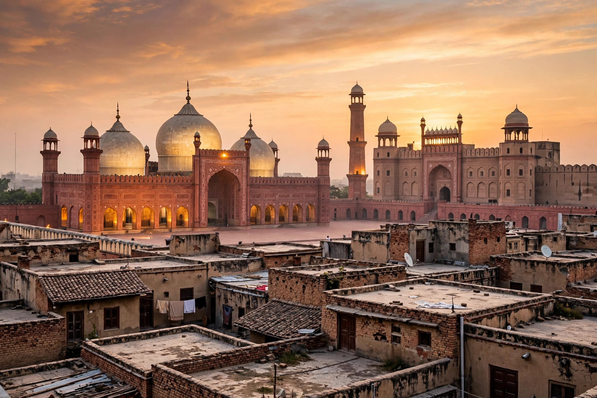

BPExch dealer in Lahore: accounts that know the city
Lahore is cricket's home crowd in Pakistan, and it plays BPExch like it watches at Gaddafi — loudly, late, and in groups. The desk's Lahore line is built around PSL season, when this city treats a home fixture like a festival with a betting market attached.
Lahore players open a free BPExch account on WhatsApp in minutes and fund from Rs 500, mostly by JazzCash. The desk answers 24/7 in Urdu and English — and in PSL season, Lahoris keep it honest.

JazzCash country
If Karachi is split, Lahore is settled: JazzCash runs this city. From the students around the universities to the traders of Shah Alam, the green wallet is the default, with Easypaisa second and bank transfers a distant third. Deposits here spike on a rhythm you can set a watch by — quiet afternoons, a surge at toss time, and a second wave at the innings break when the dhaba televisions do their recruiting. Funding from your own wallet, with the TID screenshotted before the confirmation screen sleeps, is the whole technique; the BPExch deposit page has the rest.
The PSL bundle scam
Every PSL season, Lahore grows the same weed: sellers bundling 'match tickets plus a ready BPExch ID' at a discount. The tickets are as real as the ID support — which is to say, neither survives contact with match day. An ID bundled with anything is an ID whose password somebody else chose first, and the first thing that password's other owner does is wait for you to fund it. Open your own account, free, in your own name; if you want tickets, that is a different queue and a different conversation.
Whoever you open with: the account is free, the password is yours alone, and no desk ever asks for a wallet PIN or an OTP. A Lahore offer that breaks any of those is not an offer — it is the beginning of a story you will tell other people as a warning.
Match nights and the Lahore surge
A Lahore home game moves the entire city's deposit graph by an hour. The desk plans for it, but the honest advice travels: fund before the toss, withdraw before the final if you can, and never mistake a busy queue for a missing payout. Off-season, Lahore is the calmest major line we run — winnings out same-day, questions answered by people who were probably at the match.
Getting started from Lahore
The steps are the same ones on the BPExch account page, because they work: message the desk, choose your username, receive the BPExch ID, test the login at zero balance, change the password, then fund from Rs 500 when — and only when — you are ready. What this page adds is the local knowledge around those steps: which wallet your city actually uses, when its queues form, and which of its scams to refuse by name.
Where to go next
Questions we get asked about this
What is the minimum deposit for a BPExch account in Lahore?
Rs 500, by JazzCash, Easypaisa or bank transfer — the same as everywhere in Pakistan. First deposit small, withdraw small in week one, then play at your real size.
Can I get a BPExch ID in Lahore without a CNIC?
Yes. Opening needs a name and a WhatsApp number only. Anyone in Lahore asking for your CNIC, wallet PIN or an OTP to 'create the ID' should be refused on the spot.
Why is support slower during PSL matches in Lahore?
Because the whole city messages at the toss. The desk works the queue in order — one complete message with your ID beats five fragments, every time.
Lahore mein BPExch dealer kaise milega?
Online desk se — WhatsApp par. Account free banta hai, JazzCash se Rs 500 deposit hota hai, aur pehle hafte mein chhota withdrawal karke desk ko test karna sab se behtar tareeka hai.
Last updated 9 October 2026. Figures on this page verified against the desk's own records.